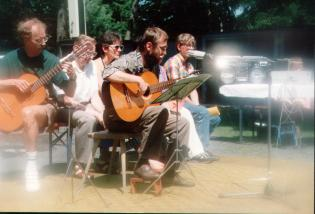

Das nächste Programm von Holger Uske entstand 1998. Wieder fließen neue Texte und Lieder ein. Vorangegangen war der Gedicht-Foto-Band „Sonntag mit Ann", dem etliche Texte entnommen sind. Programm-Premiere war am 13. März 1998 in Suhl. In dem einstündigen literarisch-musikalischen Programm behauptet der Autor ein wenig trotzig seine Liebe gegen all die Fährnisse des Lebens. „So viele Träume verloren", heißt es im Titellied, „so vielem abgeschworn … Doch von meiner Liebe laß ich nicht."

Holger Uske mit Freunden vom Südthüringer Literaturverein bei einer früheren Veranstaltung. Links der Gitarrist Harald Müller aus Suhl.
Aus der Rezension im „Freien Wort" vom 28.03.1998
Ein Dichter mischt sich wieder ein
So prononciert politisch, so scharf wie in seinem neuen Programm „Von meiner Liebe laß ich nicht" habe ich den Autoren lange nicht erlebt. Zeilen wie „Und immer falln Sieger über uns her" (aus „Lied von der Ernüchterung"), „Kein Steuerrad mehr / Keine Ruder / Harte Diskussionen / Und niemand hört / Den Wind" (aus „Odyssee") oder „Ich will neuen Herbst kommen sehn" (aus „Sehnsucht nach November") knüpfen an seine Texte aus der DDR-Zeit an … Und wie damals geht der Künstler auch jetzt wieder mit dem Stillstand in deutschen Landen ins Gericht … In „Reuterstraße 12" schildert er präzise und schonungslos, aber mit Wärme und Humor die Situation einer arbeitslosen Frau … Versöhnlichere Töne stimmen die Liebesgedichte des Programms an …: kleine Kabinettstücke der leisen Töne, des im Alltag fast untergegangenen Details, der auch nach Jahren nicht verschwundenen Gefühle.
(Michael Carl)
Textauszug
90er Jahre
Das Wellblech wieder
Kommt wie eine Mode
Der Moderne nach
Das Alte also
Rundet sich neu
Vom Dach bis zum Boden
Flüsterbögen
Verheimlichte Schatten
Balkone als Tore
Wohin gegen Ende
Führen die Fenster
Gänge
Und keine Hoffnung mehr
Auf Rost
Aufführungen dieses Programms: in Thüringen, Baden-Württemberg u. a. O.